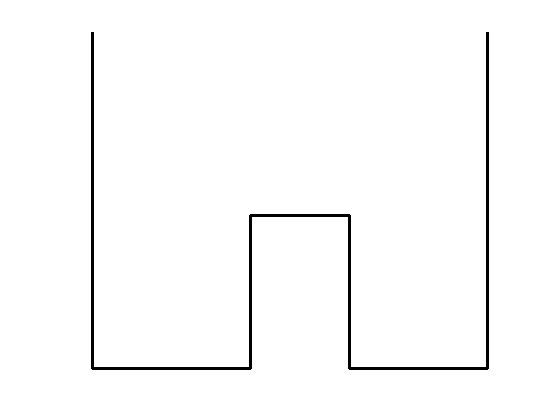
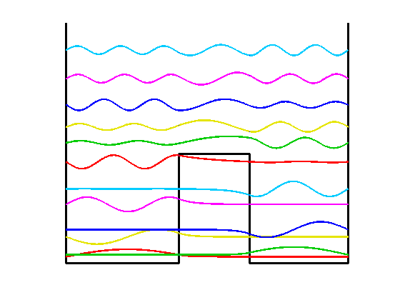

Double-well Schrödinger eigenstates
Nick Trefethen, November 2010
(Chebfun Example ode-eig/DoubleWell.m)
A well-known problem in quantum mechanics is the calculation of eigenstates of a potential with the shape of a 'double well'. Specifically, consider a potential function V(x) defined on [-1,1] by
V(x) = 1.5 for x in [-.2,.3], 0 otherwise.
We seek eigenmodes of the steady-state Shrödinger equation associated with this potential, specifically, functions u(x) satisfying
-0.007u"(x) + V(x)*u(x) = lam*u(x), u(-1) = u(1) = 0.
for some constant lam.
We can sketch the potential like this:
LW = 'linewidth'; hold off plot([-1 -1 -.2 -.2 .3 .3 1 1],[3.3 0 0 1.5 1.5 0 0 3.3],'k',LW,3) axis([-1.1 1.1 -.05 3.3]), axis off, hold on
Let's compute the first 12 eigenvalues and eigenfunctions:
tic
x = chebfun('x');
V = 1.5*(abs(x-0.05)<0.25);
L = chebop(-1,1);
L.op = @(x,u) -0.007*diff(u,2) + V.*u;
L.bc = 0;
neigs = 12;
[EV,D] = eigs(L,neigs);
disp(diag(D)), toc
0.0915
0.1168
0.3639
0.4632
0.8089
1.0211
1.3908
1.6526
1.8712
2.1745
2.5332
2.9241
Elapsed time is 3.549135 seconds.
Physicists like to plot the eigenmodes shifted up by an amount equal to the eigenvalue:
colors = [1 0 0; 0 .8 0; .9 .9 0; 0 0 1; 1 0 1; 0 .8 1]; for j = 1:neigs v = EV(:,j)/15; d = D(j,j); if max(v)<-min(v), v = -v; end plot(d+v,LW,2,'color',colors(1+mod(j-1,6),:)) end
There is a great deal of such physics in such pictures. The lower eigenmodes correspond to particles trapped on one side or the other, with a state function decreasing exponentially within the barrier. At higher energies the particles are not localized.